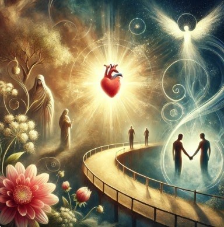
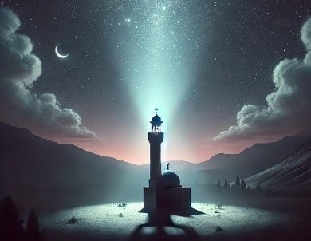
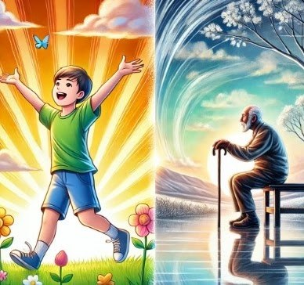
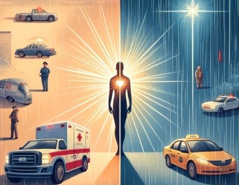
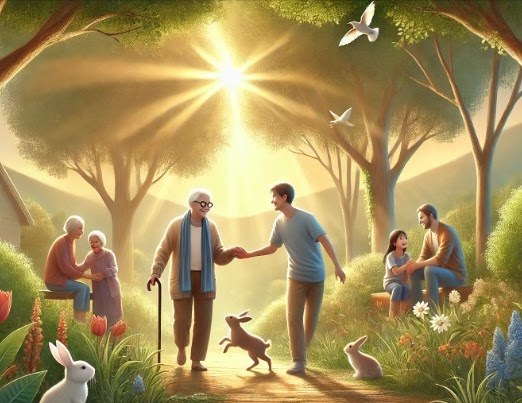
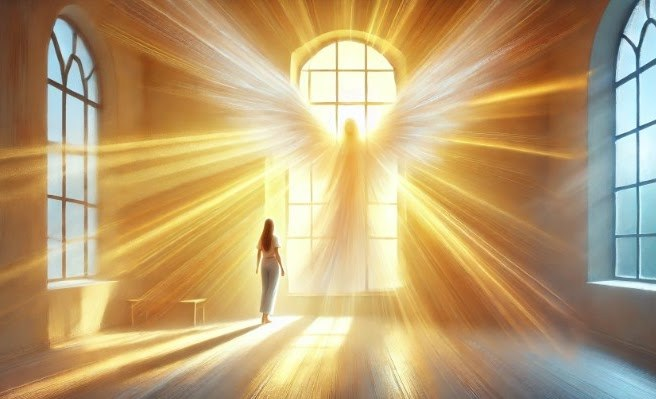
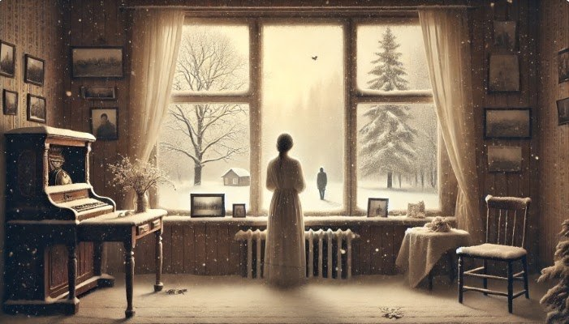

Flaming Tree : The tree is on fire, but it doesn't burn, instead it glows. This is the embodiment of the tree as a symbol of both endurance and loneliness. A tree that stands and waits despite difficulties and destruction symbolizes the struggle of nature and man.
Moon and Twilight: The fiery Moon in the sky is a symbol of war and chaos. In the poem, the phrase "the rising Moon is covered in flames" completes this image. The half moon is a symbol of passing time and changing times.
The Man Looking Out of the Window: The expression "When you look out of your window" in the poem is reflected here in its full meaning. The human figure is presented as someone who is alone with his thoughts and understands the symbolism of the tree. Her distant gaze reflects her anticipation and inner silence.
Small Candle : Symbolizes one's inner light or hope. This small light before him is a symbol of inner strength and hope in the midst of chaos and darkness.
Broken Glass : This detail can represent destruction or damaged memories of the past. Even though the glass is broken, it doesn't change the view from the window because the anticipation and loneliness still lingers.
Thus,
This image reflects the themes of loneliness, expectation and struggle in the poem with a very beautiful visual composition. The burning of the tree and the distant view of man strengthen the connection between the inner world of man and nature, fully conveying the spirit of the poem.
Analysis of the poem
This poem describes a person's loneliness, expectation and inner struggles.
Foxtrot and roar of cannons: These verses describe the atmosphere of war and chaos. Foxtrot is the ongoing rhythm of life, and the sound of cannons symbolizes the destruction caused by war.
Waiting for the tree: The tree is a symbol of endurance, stability and silence. Despite all the destruction, he sees and waits. It also symbolizes one's inner strength and immutability.
Breaking the ice and cognition's need for light: Metaphors of inner struggle and misunderstanding. The breaking of the ice - the breaking of the hard character of a person, and the fact that the understanding needs light indicates the need for understanding and enlightenment.
The whisper of a note mixed with the rustling of the night: It symbolizes the merging of one's loneliness and thoughts with the night, the depth of silence.
The similarity of the tree to the person: At the end of the poem, a deep connection is established between the tree and the person. A tree is like a man — lonely, waiting and still.
Thus,
The poem describes the loneliness and patience of a person in the midst of war and chaos. The tree is used as a metaphor between nature and man, showing that man remains unchanged both in his inner world and in the external environment.
You will understand

Bir gün anlayarsan, həqiqətən də
Haqqı, ədaləti çox olar danan.
Kövrək bir könül var güclü bədəndə,
Incidərlər, sındırarlar nagahan.
Keçmişlə gələcək arasında sən
Boşluqlar görsən də, tanrı pənahdı.
Çalış ki, uzaq ol qəmdən, qüssədən,
Boş şeyin dərdini çəkmə, günahdı.
Dünyanın sehrini duy, sevinc ilə,
Aləm bizimlədir, bizimlə inan.
Keçək gülə-gülə, verib əl-ələ,
Zamanın bu eniş, yoxuşlarından.
Analysis of the illustration
The Central Personality and the Shining Heart
The person's shining, compassionate heart, inner strength and sensitivity are symbolized. It shows that a person, despite being strong on the outside, is a fragile and loving being on the inside.
A Bridge Between Past and Future
A person stands on a path that connects the past and the future. It reflects the idea that a person learns from past experiences and moves forward with hope for the future. The ups and downs of the road symbolize that life is a journey full of challenges and achievements.
Flowers and Symbols of Unity
Flowers symbolize the beauty of life, renewal and joy. Outstretched hands show the power of unity, support and solidarity. It means that people can make life more meaningful and easier by supporting each other.
God's Protecting Light
Soft light from heaven symbolizes divine guidance and protection. This light represents people moving forward, relying on God's support even in the face of difficulties.
Thus,
This image reflects the inner strength of a person on the path of life, the support of loved ones and the protection of God. It reminds people of the importance of relying on both internal and external sources of support and helping each other through adversity.
Analysis of the poem
This poem is a philosophical thought reflecting various aspects of life. The main theme of the poem is to find a balance between concepts such as truth, justice, past and future, joy and sorrow. We can present the analysis of the poem as follows:
Truth and Justice: In the first paragraph, it is emphasized that there are many who ignore the right and justice. It is said that even people with a strong body have a fragile heart and this heart can be easily hurt and tested. It shows that people are vulnerable and fragile inside, despite their external strength.
Past and Future: The second stanza states that man is caught between past and future, but God is a constant refuge. Here, the importance of avoiding sadness and not being upset about empty things is emphasized. The poet says that it is a sin to suffer the meaningless pains of life.
The Beauty of the World and the End of Time: The third stanza calls to hear the magic of the world, to be in joy, and to go hand in hand through the difficulties of time. It shows the importance of being together both personally and for the overall harmony of society.
Thus,
The poem calls people to go through life's difficulties together, with joy and understanding. It is important to have a positive attitude and trust God in the ups and downs of life.
The call to prayer

Zülmət qaranlıqda uyuyur torpaq,
Әtrafda bir sükut, bir əbədiyyət,
İşıq tək gecənin köksün yararaq,
İlk səs asimana qalxır nəhayət.
O, sanki diksinən gözün pərdəsi,
Silkib ulduzların tozunu silir...
Ucalır tək, tənha bir insan səsi,
Qalxıb, yaradana doğru yüksəlir.
Analysis of the illustration
Dark, starry sky
The dark sky symbolizes the infinity of spiritual and spiritual space, as well as the solitude of man and his direct connection with the Creator.
And the stars are spiritual symbols that bring hope, guidance and light. They are symbols that light one's way in the dark night.
A lonely figure in a minaret
The lone figure on the minaret represents the caller. This person acts as a mediator of spiritual growth and connection with the Creator.
The presence of the solitary figure on the minaret symbolizes his appeal to both people and God with his voice.
Soft light
The soft light radiating around the figure symbolizes his spiritual energy and the strengthening of his connection with the Creator. This light is an indicator of spiritual purification and sanctity of prayer.
The light rising towards the sky emphasizes that the adhan is a call to heaven.
Calm and peaceful landscape
The silent and calm scene expresses the calming effect of the call to prayer and its soothing effect on the human soul. It also symbolizes the stillness of the night, man's need for inner peace and contact with the Creator.
Thus,
This image emphasizes the spiritual connection of man with the Creator, the spiritual elevation of the call to prayer, and the importance of a solitary call. The lonely figure represents both individual spiritual growth and a call to all people. Light symbolizes a person's transition from darkness to light, from worldliness to spirituality. The image also highlights man's need for direct contact with the Creator to find inner peace and spiritual comfort.
Analysis of the poem
This poem describes a man's rising prayer or invocation to his Creator, arising in the stillness of the night. In the poem, images such as darkness, silence and eternity are created, which reflect the absolute calmness of existence and spiritual solitude. But in this darkness and silence, a voice is raised. This sound symbolizes the direct connection of the human soul with the Creator, as if rising through the darkness of the night.
"Darkness sleeps in the dark land" - This line shows that the being is sleeping in silence and darkness. Darkness can also be a symbol of a spiritual condition - loneliness of the soul.
"A silence around, an eternity" - Here it is described that the environment is in complete silence, as if an eternal silence reigns.
"Light rising through the night alone" - This line represents the light within the darkness or the rising of a spiritual calling through the darkness.
"The first voice rises to the sky at last" - The first human voice rising in the silence of the night symbolizes this spiritual ascension and direct connection with the Creator.
"It is like the veil of the eye that is standing" - as if an eye wakes up from sleep, the human soul also wakes up, and this awakening is reflected in the contact with the Creator.
"The voice of a lonely man rises" - The voice of a lonely man emphasizes that the spiritual journey is an individual experience.
"Arises and ascends to the creator" - This line completely symbolizes the connection of a person with the Creator and his spiritual ascension.
The author describes the tree as a symbol of strength, durability and the hope of meeting someone. This image of the tree is set against a harsh and disturbing reality: the sounds of war ("cannons roaring"), destroyed villages, "fiery moon" and "deep waters". In this world of chaos and pain, only the tree remains constant and patiently waiting.
The climax of the poem is in the last line, where the author shows that the tree is "like you". It points to a deep connection between man and tree: both are part of the same world, bound by common feelings and destiny. The feeling of anticipation that pervades all dams is not only for the tree, but also for the person who is waiting for the return of himself or something of value.
Thus,
Here, the tree is not only a symbol, but also a metaphor representing the unity of man and nature in a destructive world, finding strength in expectation and hope.
I will return to that place once more
O yerlərdə zərif quşlar oxuyur, gətirib zümrüd tək nəğmələr dilə,
Al-əlvan bir gözəl şanapipik də səhərlər yanından ötür insanın...
Orda qayaların ağuşlarında
dağın əks-sədası hey avazlanır,
Dəniz sahilində əsən küləkdən
ağac yarpaqları sanki nazlanır.
Orda məhəbbətdir yuxunu pozan,
sevincdən, gülüşdən olar gözdə nəm,
Bir də o yerlərə qayıdaram mən,
o yerdə qalaram, heç vaxt ölmərəm.
Analysis of the illustration
This image shows a scene that brings together the ancient and modern architecture of the native city of Baku, where the author wants to return.
The ancient stone buildings of the Shirvanshahs palace and the mosque can be seen in front. A single minaret rising to the sky is a symbol of calmness and grandeur. The Baku Television Tower is also visible in the center of the picture. The Flame Towers, one of the capital's modern buildings, can be seen in the background. The combination of these historical and modern elements reflects both the historical richness and modern development of Baku. The sky is depicted in warm tones reminiscent of sunset.
Thus,
This picture is a sign of the poet's attachment to his homeland, his beloved places, and his inner world by presenting a unique view of Baku city that brings together the past and the future, the traditional and the modern, the historical and the technological.
Analysis of the poem
This poem describes the beauty of nature and a place where man lives in harmony with his inner feelings. The places described by the poet are a natural place where gentle birds sing, minarets reach the sky and echoes echo in the heart of the mountains.
Nature's beauty: Details such as the birds singing like emeralds, the sky echoing from the height of the minarets, the moon's light, and the passing of a shanapipi in the early morning, highlight the poetic beauty of nature.
Emotional attachment: The poet's descriptions of places associated with feelings of love and joy show his deep attachment to those places. The expression "Love disturbs sleep" emphasizes that a person's emotions and love disturb him, but this anxiety is full of happiness.
Desire for immortality: The poet's phrase "I will return to those places, I will stay there, I will never die" means that he wants to find immortality in these natural beauties and the place he loves. It seems to be a desire for eternity in both a physical space and a spiritual place.
Thus,
This poem describes spiritual ascension, man's search for eternal life in harmony with nature and love. Through nature scenes, the poet also expresses the inner journey of the soul, its spiritual awakening and ultimately the desire to find immortality.
If one day everyone turns away from you
Bir gün səndən hamı dönsə,
Desə «Getsin, dalınca daş»,
Qəlbindəki atəş sönsə,
Tənha qalsan, gözündə yaş…
Dünya sənə dar gələndə,
Özün də bilmədən nədən…
Hamı səni yad biləndə,
Bağrın yarılsa hikkədən…
Uzaq qaçsan təsəllidən,
Ögey bilsən hər nəfəsi,
Unudulsa körpəlikdən
Yadda qalan ana səsi…
Başın üstən qaçsa səma,
Ayaq altdan qaçsa da yer,
Bil ki, varam, uzatdığım,
Əllərimə əlini ver!…
Əllərimə əlini ver!..
Tuturam həyatdan indi cüt əlli.
Analysis of the illustration
This painting depicts a scene of a man and a woman standing on the edge of a cliff under the rays of the setting sun. A man extends both hands towards a woman to express his love and support for her.
The sun turns the sky golden and warm. The sun's rays act as a symbol of love and hope, adding calmness and depth to the scene. The man steps forward, extends both hands to the woman and tries to get closer to her. This shows a supportive and loving intention on his part. The woman seems to be in a state of indecision, but her attention is focused on the man's outstretched hands. His body language expresses hesitation and interest at the same time.
Thus,
This image shows that a person can find a ray of hope even in the most hopeless moment, it expresses the emotional bonds, the difficulties of life and the support needed to overcome them.
Analysis of the poem
This poem is a work that emphasizes the importance of human relationships with deep emotionality.
Abandonment and loneliness
"One day, if everyone turns away from you, and says: "Let him go, follow him"
Here the poet talks about the feeling of abandonment and loneliness. A scene of deep sadness is created for a person who feels that everyone has turned against him and that no one is with him.
Despair and inner fire
"If the fire in your heart goes out, if you are lonely, tears in your eyes..."
These verses describe a moment of despair and an extinguished inner fire. A person falls into a state full of loneliness and sadness.
Impasse and alienation
"When the world is narrow for you, When everyone recognizes you as a stranger,"
It is emphasized here that a person cannot find his place in the world and is not accepted by society, alienation. This means deep psychological pressure.
Mother's voice and childhood memories
"Mother's voice remembered from childhood if forgotten..."
Even in the most difficult moments, a person takes refuge in the memories of childhood and mother's love. But when these memories are also forgotten, a person remains completely empty.
At the end of despair, a friend reaches out
"Know that I'm here, I'm holding out, Give me your hand!"
Here, the poet emphasizes the presence of a friend who holds a person's hand in all these lonely and hopeless situations and brings him back to life.
Youth and old age

I remember my crazy youth.
Göy səma altında, bu gen dünyada,
Necə də qayğısız bir cavan idim,
Aləmə, dünyaya mən heyran idim.
Həzin bir ahəngi vardı zamanın,
Qədrini bilməzdim onda hər anın.
Qorxmadan heç nədən, sanki, nə dərdim?
Göz yaşı tökmədən köçüb gedərdim...
Indi əldən salıb qocalıq məni,
Düşünüb, anıram olub, kecəni.
Həyatın mənası nə dərin imiş,
O, keçən illərim nə şirin imiş.
Hər baxış, hər bir an mənə təsəlli,
Tuturam həyatdan indi cüt əlli.
Analysis of the illustration
This image is divided into two parts, reflecting the differences between youth and old age, emphasizing the transience of life and the different beauties of both stages, in a way that is appropriate to the poem:
Youth
A child is standing outdoors with arms outstretched in a bright sun.
Colors are vibrant and bright, flowers and butterflies symbolize the dynamism of life and the beauty of nature.
This part represents a carefree, energetic and awe-inspiring youth, matching the image of "crazy youth" in the poem.
Old age
An old man sits quietly, holding a stick in his hand, looking at nature.
The colors of this part are softer and calmer, the trees covered with light snow reflect the calmness and thoughtfulness of old age.
The setting sun in the background, pointing to the end of life, emphasizes the theme of reflecting on the past and understanding the deeper meaning of life in old age.
Thus,
This description beautifully reflects the main theme of the poem — the transience of life, the carelessness of youth and the realization of the depth of life in old age. The different atmosphere of both sides depicts the different stages of life, and calls to know the value of each moment.
Analysis of the poem
This poem reflects thoughts on the meaning of human life in youth and old age.
The Carelessness of Youth
"I remember my crazy youth." - The poet remembers his youth and emphasizes the energy and dynamics of this period.
"Under the blue sky, in this gen world, I was such a carefree youth." - These verses describe the feeling of a wide and boundless world and carefree youth. It emphasizes the difficulties of life and lack of understanding of the deep meaning in youth.
Elapsed Time and Its Evaluation
"Time had a sad tone, I didn't know the value of every moment." - It focuses on how time passes quickly and quietly in youth, and the value of moments is not known.
"I would move away without shedding a tear..." – This verse describes the painlessness experienced in youth and not being afraid of death.
Reflections on Aging and the Meaning of Life
"Now old age has left me, I think and remember the past." - In old age, it is emphasized to understand the value of the past and to remember it. Old age brings a clearer understanding of the transience of life.
"How deep is the meaning of life, how sweet are my passing years." - With old age, it is noted that the past turns into sweet memories and the meaning of life is understood more deeply.
Perception and Acceptance of the Present Moment of Life
"Every look, every moment comforts me, I hold life now with two hands." - These verses show that they are now trying to appreciate every moment of life and find solace in existence. The poet emphasizes that life clings more to the present moment and realizes the importance of each moment.
Thus,
This poem is a comparison between the carelessness of a person in his youth and his thoughts on the meaning of life in his old age. It highlights the fact that life is transient and the importance of valuing it at every stage. It tries to strike a balance between the dynamism of youth and the wisdom of old age.
Calling a doctor

Həkim çağırmaq olar,
Təcili yardım gələr.
Qulluqçu çağırarsan,
Köməyin ola bilər.
Duelə çağırarsan
Qəzəblənib kimsəni...
Taksi çağırsan əgər,
Gəlib aparar səni.
Yağış da çağırarsan,
Təbiətə can verər,
Polis də çağırarsan,
Qoymaz çəkəsən zərər.
Istədiklərin olar,
Çağırmağına baxır,
Gülüş, qəzəb, ya qorxu,
Nə istəyirsən çağır.
Nə desən çağırarsan,
Sən belə vərdiş ilə,
Bir Tanrı, bir məhəbbət,
Gəlməz sifariş ilə!
Analysis of the illustration
This illustration shows various call scenes: on one side scenes related to ambulance, taxi, police, rain and other daily calls.
The other side shows the sky and a symbol of love and spirituality radiating from a person's heart, which shows that God and love can only be achieved through sincerity.
Analysis of the poem
This poem describes the various things that a person can achieve through calling, but emphasizes that deep spiritual values - God and love - cannot be achieved through calling.
Challenge achievements
"You can call a doctor, an ambulance will come."
It indicates the possibility of calling a doctor or an ambulance to solve one's physical problems.
"If you call a taxi, it will come and take you."
It is possible to benefit from services with calls for practical needs.
"If you call for rain, it will give life to Nature."
The miracle of nature is emphasized with the metaphor of nature reviving with the summoning of rain.
"If you call the police, Goymaz won't hurt you."
It is possible to protect yourself from danger by calling the police.
Those not obtained by challenge
"One God, one love, by order!"
Thus,
The poem emphasizes that the deepest and most valuable spiritual experiences, love and connection with God, cannot be obtained by order or invitation. These values come from a sincere heart and a deep spiritual commitment.
Let us be human

«Qocalara hörmət elə!»
Məsəl qalıb aqillərdən.
Bu müdriklik bizə çatıb,
Əsrlərdən, nəsillərdən.
Qocalara hörmət elə,
Kömək eylə, yolun gözlə
Ürəkləri kövrək olur
Gəl incitmə acı sözlə.
Öyünmə ki, sən cavansan,
Fələkdən də «bac» alarsan,
Vaxt ötüşər, zaman keçər,
Axır sən də qocalarsan.
Bəlkə biz də ibrət alaq,
Baxıb vəhşi təbiətə,
Bala, ana arasında
O, müqəddəs məhəbbətə.
Canlıların ünsiyyəti
Heyran edər hər bir kəsi,
Balaların anaları
Sevib, sevmək ən’ənəsiı.
Çalışaq ki, uşaqlıqdan
Yaşlılara həyan olaq,
Böyüyəndə cəmiyyətə
Biz layiq bir insan olaq!
İnsan olaq!!!
Analysis of the illustration
This image is a sincere and inspiring scene that emphasizes respect and connection between generations, family values and living in harmony with nature. Let's analyze the description in detail:
In the center of the image, a young man helps an old man. The young man takes the hand of the old man and leads him, which symbolizes the respect and attention that young people show to the elderly. This scene emphasizes the power of love and care between generations.
Other family members and friends, seated on the right and left sides of the image, are shown in friendly communication. It reflects the values that form the basis of family unity and close friendships. The love and support that people show to each other is the basis of a healthy and strong society.
The image was created in nature, surrounded by trees and flowers. Flowers and greenery symbolize the purity and beauty of nature. The presence of small animals such as birds and rabbits adds harmony to the scene. This view, which emphasizes the close and harmonious living of nature and man, creates a feeling of calmness and comfort.
Sunlight filters through the trees, giving the image a warm glow. This light symbolizes vitality and hope for people and nature around them. The sunlight being so bright and warm sends a message that goodwill and positive values are shining into our world.
The image emphasizes harmony both within the family and between nature and man. A scene has been created where everyone treats each other with respect and love, and nature brings peace to these people. This shows both human values and the importance of living in harmony with nature.
The care that young people give to the elderly and family relationships emphasize the importance of passing on the values of society from generation to generation. This image shows the importance of building a world full of love, respect and care for children and young people.
Thus,
This image reflects deep values such as humanity, family unity, love of nature and respect for the elderly. The image encourages young people to adhere to values within the family and society and to maintain harmony between generations. This is a very deep and sincere work that emphasizes the essence of being human and how important noble values are in life.
Analysis of the poem
This poem is a work that emphasizes the importance of respecting the elderly, valuable traditions passed down from generation to generation, and the essence of being human. The poet directs the reader to values such as wisdom, compassion and love, and shows that respect for the elderly is one of the most basic characteristics of humanity.
The poem "Respect the elderly!" begins with the phrase and this phrase forms the main theme of the work. Emphasizing this ancient wise saying, the poet expresses that respect for the elderly is not just a rule, but a deep human duty. It is noted that this value has been passed down from generation to generation for centuries, which shows how deep-rooted tradition is in societies.
The poet says that the hearts of old people are fragile and they should not be hurt with bitter words. This is a call that emphasizes the importance of being more sensitive and compassionate towards the elderly. The poet encourages people to be careful and not to hurt the elderly.
The poem reminds young people with the verse "Don't boast that you are young". This verse is a reminder that young people should not trust in their own strength and youth, because in time they too will grow old. It aims to impart wisdom to young people and teach them to respect their elders.
The poet offers to learn from the sacred love between mother and child in nature. The love and attachment inherent in nature is shown to humans as a lesson from nature. This means that love and attachment are not only between humans, but in all living things, and this value is considered as a sacred value even in nature itself.
The poet emphasizes the importance of the tradition of love and respect from childhood. Teaching children to respect and support their elders from a young age is the basis for them to become well-rounded people when they grow up. This ensures both individual development and the future well-being of society.
The poem "Let's be human!" ends with the call. This expression emphasizes being a being with spiritual and moral values, not just biologically. Being human is possible not only by showing respect to elders but also by contributing to the society as a worthy individual.
Thus,
This poem deeply expresses that respect, love and attention to the elderly is a duty of humanity. It shows that being human is enriched with moral values, not only physical. The poet calls both young people and all people to create a world full of wisdom, mercy and love. The poem emphasizes that human values are eternal, reminding the readers of the values that are important to preserve for generations.
Light has no shadow
Light has no shadow.
A shadow has no mass.
Mass has no light.
The absence of light is darkness.
Reflection of light - shadow from the mass.
There is no time without space.
Without time, there is no light.
And the light has no shadow.
Analysis of the illustration
This image reflects the relationship between light, shadow, mass and time-space in an abstract and minimalist way.
Light Source and Diffusion: There is a soft light source in the center of the image that gradually fades and disappears as the light spreads around it. The way the light illuminates the surroundings without creating shadows symbolizes its pure nature and lack of mass. This reflects the concept of "absence" that light brings with it.
Transparent and Floating Shapes: Transparent and floating shapes are used throughout the image, which shows that the mass does not have a complete shape. These forms seem to represent a physical mass or substance in space, but they are incomplete and uncertain. This approach emphasizes that mass and time-space are relative and do not have a specific entity or form.
Light to Dark Transitions: The image fades gradually creating gradients from light to dark. Darkness becomes stronger as you move away from light, which describes the absence of light as darkness. This passage symbolizes the interdependence of light and shadow, presence and absence.
Sense of Spacelessness and Timelessness: The overall structure of the image reflects a vast, empty space without any definite boundaries or framework. The sense of spacelessness is associated with timelessness, symbolizing that light and mass cannot exist without space and time. Thus, the image uses a sense of spacelessness to create a philosophical depth.
Minimalist and Thought-provoking Atmosphere: The minimalist style of the image, despite its simplicity, leads to philosophical thoughts. The combination of light, shadow and spaceless forms add depth to the thought. It creates a calm atmosphere that invites one to understand concepts such as time, space, existence and non-existence.
Thus,
This image presents the interconnectedness of light, shadow, mass and space-time and their abstract nature in a minimalist way. It creates a philosophical view, emphasizing the relationship between light and shadow, presence and absence. The image is full of thoughtful depth and makes one think about the boundaries of existence and space.
Analysis of the poem
This text is a thought analysis based on physical and philosophical concepts. Each statement of the text combines the laws of physics and metaphysical meanings to deeply philosophically explore the relationships between presence and absence, light and shadow, space and time.
"Light has no shadow." This statement is aimed at understanding the nature of light. In a physical sense, a shadow is created when an object blocks light. But since light itself is not a material object, it also has no shadow. At the same time, light is metaphorically perceived as a source of truth and knowledge and symbolizes the expression "there is no shadow of truth."
"Shadow has no mass." A shadow is the absence of light and is immaterial, so it has no mass. A shadow is an image created only by the blocking of light. This phrase emphasizes the differences between what is material and what is not, real and illusory. At the same time, the shadow cannot be perceived as any physical entity, because it has no material nature.
"The mass has no light." Mass represents physical objects and does not emit light by itself. Light comes only from an energy source, and mass can only be seen by the presence of light. This phrase can symbolize that in a context where light is perceived as knowledge and understanding, a material entity cannot be a source of truth or knowledge by itself.
"The absence of light is darkness." When there is no light, there is darkness, because darkness is defined as the absence of light. This phrase also symbolizes that a lack of knowledge and understanding can be seen as "indecisiveness" or "ignorance". Darkness exists where there is no light and disappears when light comes.
"Reflection of light - shadow from the mass." When light encounters a mass, it is reflected, resulting in a shadow. This expression physically describes the relationship between light and mass. At the same time, when light encounters an object, it emphasizes the creation of a shadow, which signifies its absence.
"There is no time without space." Space and time are two related concepts. In modern physics, time is an integral part of space. This statement emphasizes that the existence of time is related to the existence of space, and if there is no space, then time has no effect.
"Without time, there is no light." Light is a wave that travels through time and space. It makes no sense to talk about the existence of light without time, because light is determined by its speed, and without the concept of time, this speed loses its meaning.
"And the light has no shadow." The text began with light and returns to light, complete with no shadow of light. This phrase symbolizes that light is a source in itself, and its absence can only create darkness. Light is the source of truth, knowledge and existence, and it cannot be overshadowed.
Thus,
This text explores the relationships between existence and nonexistence, light and darkness, space and time, combining physical concepts with philosophical thought. Light symbolizes truth and knowledge, and darkness its absence. Space and time are described as the main components of existence. The text is a symbolic expression that invites deep reflection on both physical laws and the essence of life and existence.
A father of paper
Rəfdə nə papaq var, nə də ki, əlcək,
Çoxdandı yanmayır buxarı ocaq.
"Ay ana, bəs atam nə vaxt gələcək?"
Soruşur anadan bu körpə uşaq.
Bayırda payızın nəfəsi gəlir,
Gecələr şaxtalar andırır qışı,
Nə desin?...Ananın qəlbi kövrəlir,
Boğur qəhər ilə onu göz yaşı...
Sükutu uşağın təkidi pozur:
"Gəl mənə kağızdan ata düzəldək,
(Ananın halını o, özü yozur)
Amma bunu heç kim bilməsin gərək.
Hər yerdə özümlə gəzdirəcəyəm,
Onu gəzdirmək də çünki asandır.
Nə olsun, kağızdan olanda, bəyəm?
O ki, həm cəsurdur, həm pəhləvandır."
Analysis of the illustration
This image reflects the child's deep longing for his father and the sadness in the mother's heart in a very moving and emotional way. Let's analyze in detail:
In the center of the image, a child is holding a paper father figure and looking at him. It shows how the child tries to fill his father's physical absence with his imagination. The child looks at the figure with both love and hope, comforted as if his father were with him.
His mother is sitting next to the child, watching him silently. On his face there is both a deep sadness and a tender love for his son. The mother tries to comfort her child, but she cannot hide her sadness. It shows the mother's attempt to support her child in a difficult period and tries to suppress her inner feelings.
The image is set in a simple and warm room. This simplicity shows that the family's financial situation may be difficult, but the love and sense of unity within them keeps them strong. The dim lighting in the room emphasizes the calm and sad atmosphere of the autumn evening. The light source seems to create a circle of love and warmth around these two people.
The autumn landscape seen from the window, red leaves and cloudy weather means that winter is approaching and difficult days are coming. Autumn, as a symbol of longing and absence, adds depth to the atmosphere of the image. The absence of the child's father and the coldness of the house are associated with this image.
Overall, the image brings together feelings of love, longing, and sadness. A mother silently expresses her grief and love for her son as the child seeks solace in the paper figure that replaces his father. The imagery is highly emotional and thought-provoking, reflecting the internal struggles children and families experience, especially during war or difficult times.
Analysis of the poem
This poem describes a child's longing for his father, along with the mother's pain in the cold and sad atmosphere of the winter months. The poem highlights a creative outlet born from the child's pure and pure thoughts - making a father out of paper. It also shows how the child tries to compensate for his father's absence in his small world and how he finds his own solace.
In the first lines of the poem, the child asks when his father will come. This question expresses his deep longing and desperate expectation for his father. The mother's non-answer and the anger inside her show her powerlessness in front of the child's innocent question.
The mother's crying in front of the child's question adds a dramatic effect to the poem. This shows the pain inside the mother and the desire to comfort the child in difficult times. The mother both tries to stay strong for the child and suppresses the anger inside her, which adds to the emotional depth of the poem.
A child's proposal to make a father out of paper shows his simple but powerful imagination. Although it is made of paper, for him this horse is both brave and a fighter. The child tries to fill the physical absence of his father with his imagination, and this paper father serves as a symbolic consolation for him.
The father made of paper symbolically represents the child's attempt to fill the void of his father. The idea that the paper father is also "brave" and "wrestler" expresses the child's love and respect for his father, and emphasizes how valuable his father is for him.
At the same time, the poem reflects the pain and sadness of children growing up without a father in war or difficult times, their inner world in a very delicate and effective language. Through this poem, the great longing and love hidden in the simplicity of the children's world is deeply felt.
Do not leave me

Ey xilaskar mələyim, mən sənə layiq deyiləm,
Gecə, gündüz nə qədər güc etsəm də qələmə,
Nə ilə fəxr eləyirdim boşa çıxdı, budu qəm,
Amma, bu günümdə məni sən tərk eləmə!,,,
Altıncı hiss özüdür duyğular içində önəm,
Necə leysan tökülə, yandıran odlar ələnə,
Ey xilaskar mələyim, mən sənə layiq deyiləm,
Amma, bu günümdə məni sən tərk eləmə!...
Heç ölüm gözləməsin qarşısında mən əyiləm,
Baxmadım lovğalanıb mən bu ömür silsiləmə,
Ey xilaskar mələyim, mən sənə layiq deyiləm,
Amma, bu günümdə məni sən tərk eləmə!...
Analysis of the illustration
This image symbolizes spiritual strength, hope and divine support. The use of light and transparent figures adds a deep spiritual and spiritual meaning to the image. Let's analyze the description in more detail:
In the center of the image, there is a female figure standing in front of a lighted window. The fact that a woman looks up indicates that she is directed to a divine force or a guardian angel, seeking inner strength and support. This vision symbolizes the search for spiritual support and guidance in difficult moments of a person's life.
A transparent angel-like figure shines from the window, radiating from top to bottom. The image of an angel is perceived as spiritual protection and support. This luminous being is presented as a woman's protector and gives her a light, comfort and hope. The angel's wings are spread wide, emphasizing that he is a powerful and compassionate being.
Light is the main element of the image and enhances its spiritual effect. The spread of light in all directions seems to cover the whole space and strengthens the feeling of hope in the woman. This light means finding a strong inner source of light and hope in life. The warmth and glow of the light add an optimistic atmosphere to the image.
There are large windows in the background of the image, which gives the space a sense of spaciousness. Wide windows are depicted as a door to the divine world, creating a space where the woman is closer to the spiritual world. This sense of open space symbolizes freedom and spiritual growth within a woman.
The image symbolizes a person's spiritual ties and inner strength. The angel is not only a protective force, but also a source of inner calm and tranquility. This figure reflects a person's desire to find inner light and spiritual guidance in difficult times.
The image as a whole is a manifestation of peace, hope and inner strength. The atmosphere created by the spread of light in all directions and the woman's upward gaze gives a sense of inner calm and spiritual upliftment. It symbolizes that man is searching for light in the darkness and trying to regain his inner strength.
Thus,
This image beautifully expresses the state of mind of a person seeking spiritual support and guidance in difficult times. The figure of the guardian angel and the image of light evoke a feeling of hope, support and divine trust. The spacious space, where the light spreads, creates an optimistic and spiritual atmosphere that emphasizes the freedom of the soul and the possibility of spiritual growth.
Analysis of the poem
This poem expresses a person's inner pain and appeal to a savior (angel) when faced with life's difficulties and failures. Although the poet emphasizes that he does not consider himself worthy of a savior (perhaps God or a spiritual force), he needs his support. This appeal shows the depth of human frailty and the search for help.
The poet appeals to the savior angel in each stanza of the poem. This is a source of hope and consolation for him. The poet does not consider himself worthy of this angel, but wishes not to be separated from him in his difficult days. This shows that a person is looking for hope and asking for help even in the most difficult moments.
The poet admits that his successful thoughts are empty, his expectations are not fulfilled, and there is sadness in his heart. It shows human frailty and the process of self-awareness. The poet takes a look at his past, notes that he is not boastful and gives an internal report.
The poet emphasizes the power and importance of his emotions by using the expression "sixth sense". This feeling is a symbol of deep instincts, intuition and instinct and describes the inner turmoil of a person. With such images as showers and burning fires, the poet shows the intensity and confusion of his emotions.
The poet's desire to stand before the blows of life and seek help while meeting these blows, expresses his desire to get rid of difficulties. With the line "I bow before the expectation of death", we see the poet's stubbornness and indomitable spirit, but he still seeks help.
At the end of each stanza, the poet asks the saving angel, that is, the source of hope, not to be abandoned. This phrase emphasizes his desire to find a ray of hope in himself despite all the difficulties of life and his need for that savior. The poet is looking for some kind of consolation and support by appealing to the savior angel.
Thus,
This poem brings together the difficulties, sadness, fear and hope emotions that a person experiences in life in a beautiful way. The image of the "savior angel" is in the foreground as a beloved and powerful symbol of support. The emotional struggle of the poet, the need for the angel's help, at the same time reflects deeply on the weakness of people in the struggle and their attachment to each other. This is a work that once again emphasizes the importance of love, care and human values.
My martyrs
Bu payız müharibə dağlardan daşı tökdü,
Әks-səda kimi batdı, sonra sakitlik çökdü.
Mənim yeganə dostum o torpağa qovuşdu,
Nurlu gələcək üçün, Azadlıqçün vuruşdu.
Әnginliyə səs salır, ürəyim gəlir cuşa,
Sən azadsan Ağdamım, sən də azadsan, Şuşa!
Külək də şadlıq edir üstündə dağın, daşın,
Ucaldı şəhidliyə burda döğma qardaşım!
Qubadlı, Cəbrayıla, Kəlbəcərə, Laçına,
Zəngilan, Fizuliyə mən azadlıq gətirdim,
Bu torpaqlar uğrunda övladımı itirdim.
Әn əziz insanlarım şəhidlik zirvəsinə
mənə müqəddəs olan bu torpaqda ucaldı...
Hardasa dostum qaldı...
Hardasa qardaş qaldı...
Hardasa balam qaldı…
Analysis of the illustration
This image is a scene full of strong symbolism created to honor the memory of Azerbaijani martyrs.
At the top of the image, the tricolor flag of Azerbaijan is flying and gives pride to the whole image. The flag is in the center of the scene and symbolizes the unity of the country.
The night sky and the mountains in the background represent the greatness and freedom of the Karabakh region. The moon also matches the crescent on the Azerbaijani flag, adding national symbolism.
A field of red tulips appears in the lower part. Tulips usually symbolize the blood and memory of martyrs. Tulips are depicted here in order to pay respect to the memory of the martyrs.
Soldiers can be seen standing in silhouette behind the tulip field. They salute the flag in silence and represent the bravery of the martyrs. These soldiers symbolize both the lives lost and the sacrifices made for the country.
A few Azerbaijani flags placed behind the soldiers add an additional sense of pride and national unity to the scene.
The colors of the image are calm and respectful. The combination of blue, red and green colors is reminiscent of the Azerbaijani flag and adds symbolic power to the image.
This painting is a deep and emotional work aimed at commemorating the memory of Azerbaijani martyrs and symbolizing the sacrifices made for the freedom of Karabakh.
Analysis of the poem
This poem is a deep and emotional statement about the martyrs who sacrificed their lives for the country, the struggle for freedom and the love of the land. In this poem, the poet commemorates the sacrifice of our martyrs for the sake of the motherland and the holy lands where they sacrificed their lives.
The poem begins with the line "this autumn the war poured stone from the mountains" and describes the upheaval and destruction caused by the war. The stones falling from the mountains seem to reflect the traces of war and its horrors. When the war ends, calm descends, symbolizing the emptiness, silence, and sadness that comes after war.
The poet remembers his martyred friend and emphasizes that he fought for a bright future and freedom. This reflects the martyrs' sacrifice for high moral values, deep respect and gratitude for them. The poet equates his friend with the land of his homeland, which shows how sacred the land is.
The poet remembers the liberated Agdam, Shusha and other cities with joy and pride. The names of these places add special enthusiasm and love to the spirit of the poem. He is proud of the return of the free lands and the upliftment of the souls of the brothers who were martyred there. Expressing that even the wind and mountains and stones share in this joy, it shows how freedom evokes deep feelings.
The poet mentions that he lost his son for these lands and remembers his dear people who were martyred. It reminds us of the deep scars and sacrifices that war leaves on families. The sadness in the poet and at the same time his deep respect for this sacrifice are expressed.
The poet considers the peak on which the martyrs were raised to be sacred and emphasizes that their souls remain forever in these lands. This shows how the land is a sacred value for man and the souls of the martyrs live here forever.
Thus,
This poem expresses the value of the sacrifices made for the sake of the land, the proud struggle of the martyrs and the joy of freedom. The poet deeply and emotionally conveys that every inch of these holy lands is watered with the blood of martyrs and the eternal gratitude to them. The poem expresses both loss and sadness, as well as freedom and pride, emphasizing the strength and depth of love for the motherland.
Miracle
Bütün həyat ümidlərin əlində,
Gözləyirik, olmayanlar olacaq.
Qəfil gələr möcüzələr, gələndə
Qapımızdan, bacamızdan dolacaq.
Şad xəbərlər qarşısında qaçar şər,
Yaman günün ömrü azdı, şübhəsiz
Darıxma, dost, yaman günlər ötüşər,
Birgə gülüb, sevinərik onda biz.
Sevinc gələr bu məkana, bu elə,
Nur ələnər çölə, düzə, səmaya,
Qədəm qoyaq onda verib əl-ələ,
Möcüzələr baş verdiyi dünyaya.
Möcüzələr yaradacaq yaradan,
Öz-özünə yetişəndə zamanı.
Soruşma ki, axır gəldi haradan?
Çünki olmur möcüzənin ünvanı.
Analysis of the illustration
This image is based on the theme of hope and wonder. The image is dominated by green tones, which symbolize the vitality and renewal of nature.
A bright sun appears in the center of the image, and its rays seem to illuminate the entire space, creating a magical atmosphere. The power of the rays is embodied as both a symbol of wonder and a light of hope.
Wide green meadows and fields show the abundance of nature and a peaceful place. These open spaces signal both comfort and an open path to the future.
In the foreground, a couple stands hand in hand and looks into the future. The presence of these two people together is a symbol of friendship, love and support. They look forward to a bright future, which conveys a message that people together can overcome adversity.
This image is a visual representation of peace, nature, unity and hope for the future as a whole. The dominance of green colors and rays of light make the image even more inspiring, emphasizing the belief in miracles and readiness to meet unexpected beauties.
Analysis of the poem
This poem is full of hope and expectation of miracles, it reflects faith in the future and a deep belief that better days will come. Here, the poet describes a future where difficult days will end, good news will spread everywhere, and friends will rejoice together. Miracles, seemingly unattainable hopes, and God-made destiny come to people unexpectedly and change lives without any address.
Main ideas emphasized throughout the poem:
It emphasizes that all life is full of hope and good days are yet to come. With the verse "We are waiting, there will be those who are not", it indicates that one day the deepest dreams of a person can come true.
The poet states with confidence that the life of difficult days is short and that these days will be left behind, happier days will come. The importance of friendship is also emphasized here, that is, friends overcome difficult times together and rejoice together in the future.
Miracles are described as both unexpected and unaddressed events. The importance of receiving miracles when they are due and experiencing the joy they bring is emphasized.
The phrase "let's step in and join hands" means that friends and people rejoice together, join hands and step into a happy future.
Thus,
This poem reminds people to be hopeful even in difficult times, to rejoice together, to believe in unexpected miracles and that even the deepest dreams can come true one day.
It is snowing

Yadımda dəqiq deyil,
Hansı il, hansı gündə,
"Qar yağır" qışqırardıq,
Pəncərənin önündə.
Külək nəsə qopardı,
Qar yağırdı ahəstə.
Gülə-gülə tutardın,
Məni qolların üstə.
Qışqırardıq "qar yağır",
Uşaq sevinci ilə.
Qarsa sakit yağardı,
Beləcə, ildən ilə.
Hər il qış ərəfəsi,
Baxıb qara, borana,
Mənə elə gəlir ki,
Səs salırıq hər yana.
Bir gün, bir sakit səhər
Ürək sancdı bir təhər.
Sən dünyadan köçmüsən,
Bacım çatdırdı xəbər.
Telefon susan andan,
Yenə də qar yağırdı,
Qışqırmaq istəyirdim,
Səsimsə çıxmayırdı...
Qış gəldi, qara baxsan,
Ürəyim səni andı.
Kim deyir ki, sən yoxsan,
Yox, yox, bu ki, yalandı.
Qəlbimdə, canımdasan,
Sən mənimləsən axır,
Әzizim, yanımdasan,
Bax, gör necə qar yağır...
Analysis of the illustration
This image is filled with the memory of a lost loved one and the nostalgia that the winter season brings. Let's analyze it with these details:
In the center of the image is a human figure standing in front of the window, deep in thought and looking into the distance. This figure represents someone who bears the scars of a lost love or the memory of a loved one. Her looking out the window symbolizes her reminiscing about the past and reminiscing about the days she spent with her loved one.
The snow falling quietly behind the window and the snowy landscape express the calmness and coldness of nature. The snow slowly falls to the ground, as if the memories of the lost person are rekindled every winter with the falling snow. Snowfall represents both sadness and love for memories.
The room has soft lighting, which gives it a warm and sad atmosphere. This light reflects the love and attachment to memories within a person. Soft lighting and a dark atmosphere complement the quiet and brooding nature of winter.
Photos and small souvenirs placed on the table help to remember the past and loved ones. Photographs are a symbol of happy moments and unforgettable memories. These objects make the presence of the lost loved one felt and symbolize that they still live in the heart.
The image generally creates an atmosphere of deep sadness and love. Filled with memories of a lost loved one, this room beautifully captures the sad yet calm emotions that winter brings. Both sadness and love are felt throughout the image.
The image makes a person remember again the beautiful moments he lived in the past and admit that these moments are unforgettable. When every winter comes, these memories are revived and make a person feel that the person he loves is with him in spirit.
Thus,
This image, although sad, beautifully reflects the inner world of a person who tries to keep the memory of his loved one alive in his heart. The calm snowfall and the warm atmosphere in the room emphasize the emotions created by love and loss. This image is a very powerful expression that symbolizes the unforgettable memories of the past and the fact that our loved ones always live in our hearts.
Analysis of the poem
This poem describes the deep longing and love for a lost loved one. The poet remembers the happy moments they lived together in the past and returns to the past with the calm snowfall. Snowfall symbolizes the sadness of this loss and at the same time that the spirit of that person is always with him.
The poem describes the happy moments the poet spent with a person he loved as a child - most likely a sister or a friend. They watched the snow fall together and shouted with childlike joy in front of the window. These verses reflect the happy moments of the past and the snow as a symbol of pure joy. The simplicity and childlike purity of those moments express heartfelt attachment.
The gentle fall of snow symbolizes the persistence of memories of the past and how that person's memory is revived every winter. Even though the years have passed, the snow falls with the same calm every time, and it rekindles the memory of the lost person.
In the middle of the poem, the poet's sister announces the death of a beloved person. This news causes a deep pang in his heart. Even though it is snowing, that beloved person is no longer with him. This shows the difficulty of accepting the loss and getting used to its absence. Although the poet wants to scream at that moment, he can't get his voice out because of the power of grief, which symbolizes how heavy grief is.
The poet emphasizes that that person always lives in his heart and is with him. "Who says you're not?" with his verse, he shows that the person he loves is with him spiritually, if not physically. The snowfall makes the presence of that person felt again and symbolizes that he always lives in the heart.
For the poet, every time it snows, it reminds him of the happy moments he spent with that beloved person. The snow falling quietly to the ground shows that the memory of that person remains in the memory with the same calmness. Snow symbolizes both the sadness of loss and the beauty of the past.
Thus,
This poem expresses how deeply the memory of a beloved person leaves a mark on the human soul and how it always lives in the heart. This poem, which combines loss and memories, creates a unity of both sadness and unforgettable love. Snowfall expresses both the sadness of the poet and the vividness of the memories of the person he loves. Emphasizing the importance of the presence of a person who leaves such a deep mark in everyone's life, this poem beautifully conveys that our loved ones who live in memory and heart are always with us.
Except for you
Bütün şəkillərini
Bir-bir cırıb tulladım,
Bu olmadı imdadım,
Səni unudammadım.
Eldən, obadan qaçdım,
Bir də geri dönmədən
Neçə bələnlər aşdım,
Bu olmadı imdadım,
Səni unudammadım.
Məni sevənlər oldu,
Qədrim bilənlər oldu,
Kədərimi bölüşüb,
Mənlə gülənlər oldu,
Bu olmadı imdadım,
Səni unudammadım.
Acı meydən, şərabdan
İçdim içənə kimi,
Huşum itənə kimi,
Bir sonsuz yoxluq kimi,
Sonuncu məxluq kimi,
Küçədə sərxoş yatan
Yazıq pinəçi kimi,
Nə bilim nəçi kimi,
Nə bilim nəçi kimi,
Bu olmadı imdadım
Səni unudammadım.
Evləndim, həyatıma
Ailə, uşaq doldu,
Evim-eşiyim oldu,
Bu olmadı imdadım,
Səni unudammadım.
İndi mən qocalıram,
Can atsam da havayı
Hər şey yadımdan çıxır,
Hər şey, səndən savayı.
Analysis of the illustration
This image reflects the deep loneliness, the weight of the past and the traces left in the darkness by unforgettable memories.
A man sitting by the window is deep in thought and looking into the distance. His silhouette is dark and lonely. This situation symbolizes deep attachment to the past, longing for unforgettable memories and inner loneliness. Looking at an outdoor landscape, a sunset or a cloudy sky indicates the passage of time and an attempt to maintain a connection with the past.
The pictures hanging along the wall and scattered on the floor represent traces of the past and memories that we don't want to forget. Because these pictures are in the dark, the details are not clear, but it is clear that they belong to people and events of the past. This shows how the past leaves deep traces in our lives and they are not erased from our memory.
There is a lit candle and an empty bottle on the table. The light of the candle is weak and lonely, representing the extreme fragility of life and a symbol lit to remember the past. The bottle can symbolize attempts to forget in the past and failed every time. These elements emphasize a person's state of deep thoughts and memories.
The dim light and shadows in the room indicate that the atmosphere is sad and lonely. The light slowly seeps in through the window, as if the traces of the past never completely disappear, but always remain as a shadow. This delicate interplay of light and shadow symbolizes the connection between the past and the present, the fact that a person can never completely break away from his past.
The blurred landscape behind the window and the light in the distance indicate that the past is far away, but still one cannot escape from one's gaze. This scene is harmoniously depicted with a dark and sad atmosphere.
In general, a melancholic and nostalgic picture emerges. This scene symbolizes a person's attachment to his past memories, even though he tries to forget them, each time these memories come closer to him. The dark and quiet of the room intensifies loneliness and sadness.
Thus,
This image beautifully reflects the memories that a person wants to escape from the past, but he always feels it with him, and the futility of trying to forget. Deep attachment to the past and loneliness is a powerful work of art that reflects the human state of mind.
Analysis of the poem
This poem is an expression of an unforgettable love and longing. It describes the poet's deep attachment to a lover who is in the past but cannot get out of his heart, his emotional upheavals and his futile efforts to forget.
The fact that the poet tears up all the pictures and throws them away is a symbol of trying to forget the past. But this physical action cannot change his inner feelings. The poet shows the depth of memories and the impossibility of escaping them with the line "It didn't happen, I saved you, I didn't forget you".
The poet tries to escape from his past by "running away from the village and the village" and "overcoming many obstacles", but any distance cannot make him forget. Even going to distant lands does not help this forgetfulness, because her lover is with her everywhere.
The poet meets new people who love him, share his grief and support him, but this does not become a cure for his pain. His pain is so deep that any love and understanding is not enough to make him forget the past.
The poet's drinking is a way of trying to drown his pain. He gets drunk, passes out, and even makes himself very helpless by lying drunk on the street. But this does not help him either, because unforgettable love is stronger than alcohol.
The poet builds a family, has children, owns a house. But all these life innovations and responsibilities cannot make him forget his past love. The fact that family life is no cure for such pain shows how deep his love is.
The poet grows old and moves away from everything over time, memories are erased, but this unforgettable love from the past remains in his heart. With the line "I forget everything, everything, except for you", the poet emphasizes how this love is deeply embedded in his memory and will not be erased throughout his life.
Thus,
This poem describes the moments when one wants to forget about the past, the deep emotional bonds and the futility of trying to forget throughout life. It is a very moving work that shows how love is deeply rooted in the human soul and cannot be erased by any physical or emotional changes. The poet, no matter how deeply he experiences this love that he cannot forget, he has to accept it.
A kind word
Dünya bir xoş sözdən almış təməlin,
Təəccüblü nə var? Düşünək gəlin.
Bir xoş sözlə dinək nurlu səhərdə,
Dünəndən inciklik hökm edən yerdə,
İnciyib, küsübsə quda qudayla,
Qardaş dalaşıbsa harayla, hayla...
Bəs belə davranış gələrmi saya,
Əgər əl qaldırsa oğul anaya?!
Dayanın, dayanın!
Dinləyin təzdən.
Bu dünya yaranıb axı xoş sözdən,
Bircə gülər üzdən, bir xoş baxışdan,
Təbii səhərdən, müqəddəs anddan!
Sülh ilə yaşasın dost, qonşu, kim var,
Şahinlər, balıqlar, hətta ayılar,
Sülh olsun meşədə, çəməndə, düzdə,
Sülh olsun yad eldə, sülh olsun bizdə.
Bu gün doğulanlar daim var olsun,
Onlara məhəbbət, tale yar olsun!
Kimlər ki, dünyaya gəlib bir kərə
Xoşbəxtlik dilərəm mən min illərə..
Azdımı? Qəlbimin verilsin təbi
Xoş günləri olsun daim, əbədi!
Xoş sözümüz olsun su, od və hava,
Sülh olsun həmişə, gərəkmi dava?
Hamı sağlam olsun, olsun xoş büsat,
Çünki xoş söz ilə başlayır həyat!
Analysis of the illustration
This image creates a simple and pleasant picture that emphasizes the beauty of peace, unity and living in harmony with nature. Let's analyze in detail:
In the center of the image, a group of people are standing in a circle holding hands. It symbolizes unity and mutual support.
Families and friends are happy together, which emphasizes how important harmony is in human relationships.
Rabbits, birds, deer and other animals are placed in different parts of the image. Animals peacefully and safely in harmony with nature symbolize a peaceful world. These animals create a feeling of closeness to both nature and people and show that harmony is possible not only between people, but also with nature.
The main color of the image is green and soft sunlight. These color tones reflect calmness, vitality and beauty of nature. The sunlight creates a feeling of fresh morning air and renewal, which makes the image more hopeful.
In the background are light green hills, trees and clear sky. This simple nature scene reinforces the feeling of calmness and being in harmony with nature. The vastness of open space gives the impression of a world where people live freely and happily.
A small house on the left side of the image symbolizes a simple and modest living. Mushrooms, flowers and other plants around the house increase the vividness of the image with the details of nature and strengthen the human-nature connection.
Birds and butterflies flying around the image enhance the feeling of freedom and peace. These elements also symbolize the dynamism of life and the balance in nature.
Thus,
This image conveys a message of peace, kind words and coexistence. The harmonious coexistence of people and nature embodies a world where friendship and love reign everywhere.
Analysis of the poem
This poem is a call for peace, friendship, love and the power of kind words. The poet emphasizes that the main value that beautifies the world and brings people together is a kind word and a kind attitude. In each verse, there is a belief that people treating each other with love and respect will make the world a better place.
The poet says that the foundation of the world is laid by a kind word and that the most powerful tool that unites people is a kind word. Starting from the first stanzas, he points out how kind words and smiles can soften conflicts in human relationships.
The poet wishes for peace and friendship to extend to everyone, even to the creatures in nature. It encourages to stay away from disputes between people, resentments between brothers and sisters and treat each other with love and understanding. The repetition of the word "peace" throughout the poem shows the poet's strong desire for peace.
The poet emphasizes the impossibility of a son raising his hand to his mother and reminds of the importance of respect in family relationships. This shows that family values are the basis of society and peace within the family affects the overall peace of society.
The poet wishes for peace and harmony not only among people, but also among living creatures in nature. With the phrase "hawks, fish, even bears", he emphasizes the need for every creature in nature to live in peace.
The poet wishes those born today to be happy, to have love and prosperity in their lives. It expresses a hope and prayer that future generations will live in a happy world.
The last stanza of the poem emphasizes that kind words are the beginning of life and will bring people health, harmony and happiness. He points out that kind words are as indispensable as water, fire and air, and says that the continuity of life lies in good relationships.
Thus,
This poem calls people to treat each other with love, understanding and respect. The poet emphasizes that peace, friendship and happiness should play a key role in our lives and relates it not only between people, but with nature and the whole universe. This poem is a description of a utopian world where the world treats every person and every creature with love and respect.